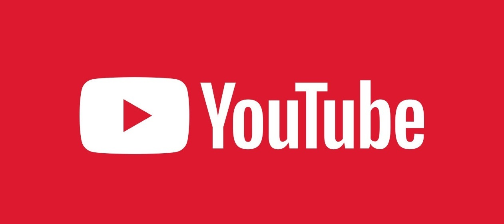

YouTube в России переживает очень непростое время. Из-за последних политических ситуаций в мире, Google отрубила монетизацию российским блогерам за просмотры их контента. Многие каналы из-за этого забросились, качество видео ухудшилось, а люди, которые решались только заводить канал сразу оставляли эту идею в связи отсутствия финансовой мотивации. Творчество, конечно, хорошо, но одним желанием творить на хлеб не заработаешь. У многих справедливо возникает вопрос - а стоит ли теперь заниматься видеоблоггингом на данной платформе?
Мое мнение - еще как стоит! Ведь до сих пор есть блогеры, которые активно ведут свои каналы. А значит, что они имеют с этого хороший доход.
Давайте разберемся, стоит ли в 2022 году начинать «пилить» контент на YouTube.
Думаю, это первое, о чем подумали многие.
Реклама на данный момент стала основным источником дохода блогеров. К ним обращаются и такие крупные бренды, как Тинькофф или Альфа Банк, так и мелкие брокерские конторы или vpn разработчики.
Цена за рекламу очень сильно варьируются и, в основном, обсуждается между блогером и рекламодателем
Удивлены? Да да, с помощью монетизации до сих пор можно заработать российскому блогеру.
Монетизация - это отчисление автору канала за просмотренное его подписчиками рекламы в Вашем видео.
В России перестали показывать рекламу зрителям, поэтому монетизация дохода особого не приносит.
Что же делать в такой ситуации? Российской аудитории рекламу не показывают, зато у жителей остальных стран все с этим в порядке. Начните снимать видео для них. Возможно, у Вас получится заинтересовать зарубежных зрителей, ведь даже не зная иностранных языков, за границей проживают много русскоязычной аудитории.
Данный вариант лишь косвенно принесет Вам прибыль и его также можно отнести к рекламе.
Если у Вас есть свои курсы, сайты, магазины и тому подобное, то можно использовать свой YouTube канал, как платформу по раскрутке этих проектов. Расскажите своим зрителям о достоинствах своего продукта, почему надо обращаться именно к Вам, зарекомендуйте себя в видео.
Вы можете стримить на YouTube и собирать со зрителей донаты. Или же снимать видео, а в описании к ним вставлять ссылки для донатов. Щедрые зрители, которые оценят труд, начнут жертвовать свои деньги.
Популярные донатные сервисы: Donate Pay, QIWI Donate, Donation Alerts.
Главной причиной начать блогерскую деятельность на YouTube - уменьшение конкуренции.
Как уже написал выше, после отключение рекламы в России, произошел массовый отток блогеров и конкуренции на платформе значительно уменьшилось. Самое время ворваться со своими идеями)
По выше описанным методам, можно уверенно сказать, что на YouTube до сих пор есть возможность заработать. И если ты ответственно возьмешься за свой канал, то у тебя получится выйти на достойную прибыль!

Связаться со мной:
ilshat.nabiullin.00@gmail.com